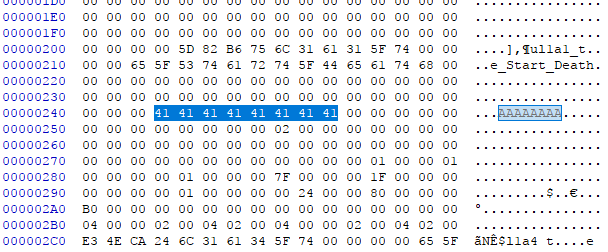
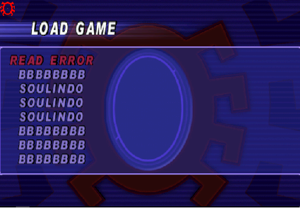
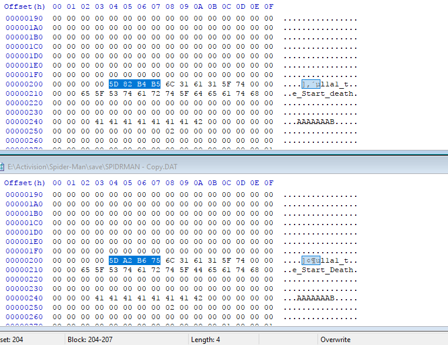
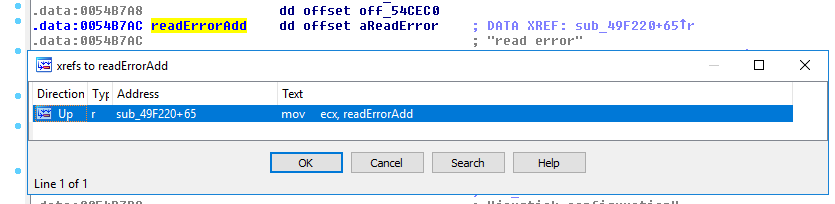
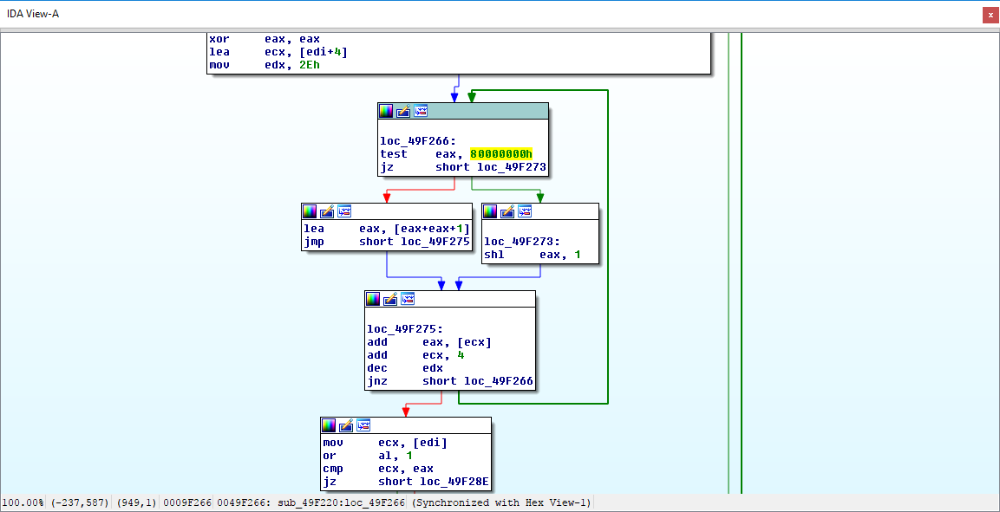

Reversing: Spiderman 2000 - Save file protection
Intro
What's the purpose of your save file editor if you already have cheat codes?
First of all, this was my first time ever reversing a save file format and I had no idea of the existence of the cheat codes(only mid-development I did find they existed, which made testing so much easier). The reason I started to code this tool was because some levels become unbeatable if your FPS are not capped 30 due to this game being a shitty port.
How it was done
To start I needed to locate the save file location. The most common places are in My Documents or in the game's directory. In this case it was easy, it's a file called SPIDRMAN.DAT that is inside a directory called save which is indeed in the game's directory. If you are trying to do the same but with another game but still can't find it, search online or try to find references of "save files" in the game's code through static analysis(IDA Pro, Radare2,..) or dynamic analysis(x64Dbg, OllyDbg,...).
Let's dissect it
The game uses save slots and they must have a name. So right after opening SPIDRMAN.DAT with an hex-editor, in my case HxD, I made a string search for the name I had chosen for the first slot(it was AAAAAAAA). It was found at the offset 0x243 with no more appearances in the file, which is good.

I tried to modify the name to AAAAAAAB and see if it worked... it didn't.

The game must use kind of protection. In order to find what's going on I restored the save file, loaded in-game and re-saved with the name AAAAAAAB. After that i run the compare function built-in HxD and found that there's a 3-byte difference between the corrupted save with the name AAAAAAAB and the one created by the game starting at 0x205. Three bytes is not common in the x86 architecture(as a general rule everything is 4-byte padded), so with more testing I found that it actually started at 0x204 but the differences in my first test were so minor that the value kept 1 byte intact. And what is this value? It's a checksum. In a nutshell it's used to verify the integrity of slot(if it's corrupted or was tampered with).

Finding how the checksum is calculated
What should've been a no-brainer became a really boring and tedious task to accomplish just because I didn't stop to think. After locating the Load Save Game routine I should've put a hardware breakpoint on access on the checksum and wait for it to stop on a TEST or a CMP, but nope, this is what I did instead(and what you should avoid):
-
Place a hardware breakpoint on the save slot name. This was a terrible idea because the name is not only used to verify the integrity but also is rendered on the screen, this means most of the breakpoints would've been on a
MOVleading me to the guess game. -
Try to find the save slot in memory before it was written to the disk.. Not only it tricked me into thinking I've found checksum routine but made me really mad. (don't even try to do this)
-
Modifying the original
SPIDRMAN.DATwhen one of the former mentioned breakpoints was hit. This is wrong at so many levels.. As I said I was not thinking straight and didn't take in consideration that the whole save file is read before performing any operations..
Finally I took a break and remembered that in case of checksum failure READ ERROR is displayed on the screen instead of the name. This meant that somewhere in the game it has to decide what it will render on the screen, the error or the name. IDA is able to find the string and I check the xrefs... There's only 1!!! Perfect!

Here's graphs of the checksum routine: 
EDIholds the the start address of the buffer that contains save slotEAXis the calculated checksum.(starts as 0)ECXholds the current position in the save slot buffer(it's treated as a DWORD array)EDXis the number of elements in the save slot buffer that is also used as the counter in the loop
ECX starts at EDI+4 because the first DWORD in the slot is the checksum. While the the end of the slot is not reached it checks whether the 32th bit on the calculated checksum is on, if it is then it doubles the current value and adds 1, if not it only doubles. After that the current DWORD of the save slot buffer is added to the checksum and goes to the next. When the loop is over the first bit is turned on and the checksum is compared to the one in the save slot(which is pointed by EDI), if they match then the name is rendered, else it's READ ERROR.
All of this culminated with the first version of my save game editor that only contained the CalculateChecksum function.
If you're interested in knowing how the game stores the info I'll be covering it in the next post